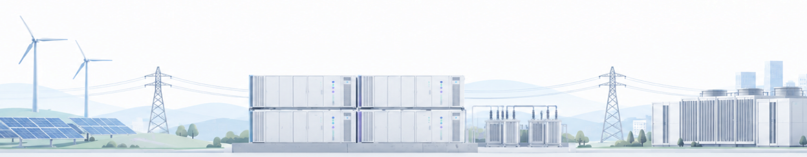

배터리로 전력을 저장하고, 끊기지 않게 지켜냅니다. 그리드 규모 ESS부터 우주 발사체 전원까지 아우릅니다.

ESS
UPS
솔루션
01-1
GRID ESS
전력망의 안정적인 운영과 효율적인 에너지 관리를 위한 대용량 배터리 에너지 저장 솔루션입니다.
01-2
Renewable ESS
태양광 및 풍력 등 변동성이 높은 신재생에너지를 안정적으로 저장하고 활용하기 위한 배터리 솔루션입니다.
01-3
C&I ESS
산업 및 상업시설의 효율적인 에너지 관리와 안정적인 전력 운영을 위한 배터리 솔루션입니다.
02-1
데이터 센터 전용 UPS
대규모 Data Center 및 AI Data Center의 안정적인 운영을 위한 고출력 배터리 백업 솔루션을 제공합니다.
02-2
산업용 UPS
순간적인 전력 중단에도 안정적인 운영이 요구되는 산업시설 및 주요 생산설비를 위한 배터리 백업 솔루션입니다.
02-3
주요 전력망 UPS
전력 공급의 연속성과 높은 신뢰성이 요구되는 주요 사회 및 산업 인프라를 위한 배터리 백업 솔루션입니다.
03-1Module
배터리 시스템을 구성하는 기본 단위로서 요구되는 전압, 용량 및 출력 특성에 맞춰 설계됩니다.
에어 쿨링 타입(Air Cooling)
주요 적용 분야ESS, Telecom, Military, Electric Vehicle, Industrial, Aerospace, Marine 등
리퀴드 쿨링 타입(Liquid Cooling)
주요 적용 분야ESS, Telecom, Military, Electric Vehicle, Industrial, Aerospace, Marine 등
Certification
03-2Rack
Battery Module 또는 Pack, BMS 및 전기 보호 시스템을 통합하여 확장 가능한 Battery Rack Solution을 제공합니다.
High Energy Type Rack
주요 적용 분야ESS, Telecom, Military, Electric Vehicle, Industrial, Aerospace, Marine 등
High Power Type Rack
주요 적용 분야ESS, Telecom, Military, Electric Vehicle, Industrial, Aerospace, Marine 등
Certification
03-3Container
Battery Rack과 전기 및 제어 시스템 등을 통합하여 대용량 ESS 구축에 적합한 Containerized Battery Solution을 제공합니다.
Container Air Cooling Type
주요 적용 분야ESS, Telecom, Military, Electric Vehicle, Industrial, Aerospace, Marine 등
Container Liquid Cooling Type
주요 적용 분야ESS, Telecom, Military, Electric Vehicle, Industrial, Aerospace, Marine 등
Certification
03-4BMS
Battery의 상태를 지속적으로 Monitoring하고 각 시스템 Level의 정보를 통합하여 안정적인 Battery System을 운영할 수 있는 BMS Solution을 제공합니다.
Module BMS(CMU)
주요 적용 분야ESS, Telecom, Military, Electric Vehicle, Industrial, Aerospace, Marine 등
Rack BMS(BPU)
주요 적용 분야ESS, Telecom, Military, Electric Vehicle, Industrial, Aerospace, Marine 등
System BMS(BCP)
주요 적용 분야ESS, Telecom, Military, Electric Vehicle, Industrial, Aerospace, Marine 등
Certification